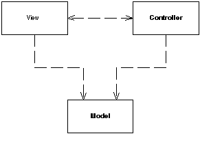

| Home | Articles | Talks | Links | Contact Me | ISA | ThoughtWorks |
Split user interface interaction into three distinct roles

Model View Controller (MVC) has been one of the most quoted (and most misquoted) patterns around. It started life as a framework developed by Trygve Reenskaug for the Smalltalk platform in the late 70's. Since then it's played an influential role for most UI frameworks and thinking about UI design.
MVC considers three roles. The model is an object that represents some information about the domain. It is a non-visual object and contains all the data and behavior other than that used for the UI. In its most pure OO notion the model is an object within a Domain Model. You might also think of a Transaction Script as the model providing the Transaction Script contained no UI machinery. Such a definition stretches the notion of model, but fits the role breakdown of MVC.
The view represents the display of the model in the UI. So if our model is a customer object our view might be a frame full of UI widgets or an HTML page rendered with information from the model. The view is only about display of information, any changes to the information are handled by the third member of the MVC trinity: the controller. The controller takes user input and manipulates the model and causes the view to update appropriately. The UI is therefore a combination of the view and the controller.
As I think about MVC I see two principal separations: separating the presentation from the model and separating the controller from the view.Of these the separation of presentation from model is one of the most fundamental heuristics of good software design. This separation is important for several reasons
A key point in this separation is the direction of the dependencies: the presentation depends on the model but not the other way around. People programming in the model should be entirely unaware of what presentation is being used. This both simplifies their task and makes it easier to add new presentations later on. It also means that presentation changes can be made freely without altering the model.
This principle introduces a common issue. With a rich client interface of multiple windows it's quite likely that there will be several presentations of a model on a screen at once. If a user makes a change to the model from one presentation, then the others need to change. To do this without creating a dependency you'll usually find the observer pattern, such as event propagation or a listener. The presentation acts as the observer of the model: whenever the model changes it sends out an event and the presentations refresh the information.
The second separation, that of view and controller, is less important. Indeed the irony is that almost every version of Smalltalk didn't actually make a view/controller separation. The classic example of why you'd want to separate them is to support editable and non-editable behavior. You can do this with one view and two controllers for the two cases, where the controllers are strategies for the view. But in practice most systems have only one controller per view, so this separation is usually not done. However this separation has come back into vogue with web interfaces where it does become useful to separate the controller and view again.
The fact that most GUI frameworks combine view and controller has led to the many misquotations of MVC that I've run into. The model and the view is obvious - but where is the controller. The common idea is that it sits between the model and the view as in the Application Controller, a fact that isn't helped that the word "controller" is used in both contexts. Whatever the merits of a Application Controller it's a very different beast to an MVC controller
For the purposes of this set of patterns these principles are really all you need to know. If you want to dig deeper into MVC the best available reference is[POSA].
The value of MVC really lies in its two principles. Of these the separation of presentation and model is one of the most important design principles in software and the only time you shouldn't follow it is in very simple systems where the model wouldn't have any real behavior in it anyway. As soon as you get some non visual logic you should look to apply the separation. Unfortunately a lot of UI frameworks make it difficult, and those that don't often are taught without a separation.
The separation of view and controller is less important, so I'd only recommend doing it when it is really helpful. For rich client systems that ends up being hardly ever. It is however common in web front ends where the controller is separated out - most of the patterns on web design here are based on that principle.
 |  |